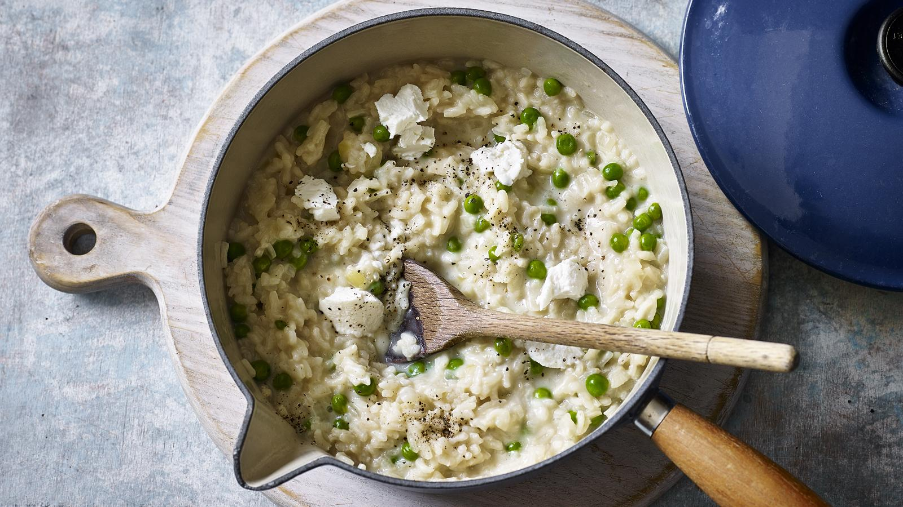

Pea and goats cheese risotto

A warm risotto is lovely on a cold day - and rice and peas is a nutritious combo too.
If you’re not a fan of goats’ cheese then swap it for another type. This is designed to be a low cost recipe.
Ingredients
- 1 litre vegetable stock (made with a stock cube)
- 50g butter
- 1 onion, finely diced
- 300g risotto rice
- 200g frozen peas, defrosted
- 125g soft goats’ cheese
- salt and black pepper
Steps
- Keep the stock warm in a pan over a low heat while you prepare the rest of the risotto.
- Heat a large heavy-based saucepan over a medium heat. Add the butter and, once melted, add the onion along with a pinch of salt. Cook gently until the onion is softened and translucent. Turn up the heat a little and stir in the risotto rice, making sure each grain is coated in the melted butter. Cook the rice for 1-2 minutes, or until the grains become translucent at the outer edges.
- Pour in a ladleful of stock and stir to mix into the rice. Reduce the heat slightly to medium. Once the stock is absorbed add another ladleful and repeat, waiting for the stock to absorb before adding more. Stir continuously.
- Once three quarters of the stock has been incorporated, taste and check the rice. It should be soft but retaining a slight bite. Continue to add the remaining stock if it’s not quite cooked. Once ready, stir in the defrosted peas and reduce the heat to low. Mix well and leave to stand for 2-3 minutes to warm the peas through. Taste and adjust the seasoning as necessary.
- Just before serving, dot the risotto with three quarters of the goats’ cheese giving it a stir to slightly mix the cheese through. Serve hot with the remaining goats’ cheese dotted over the top.